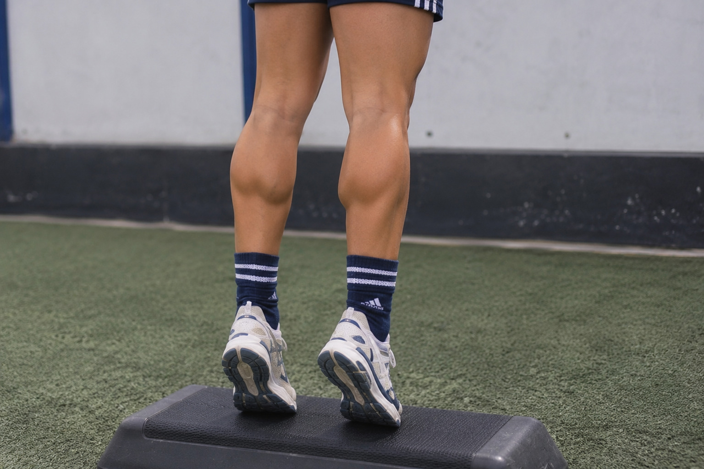
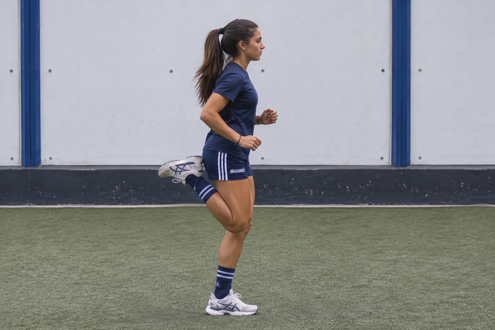
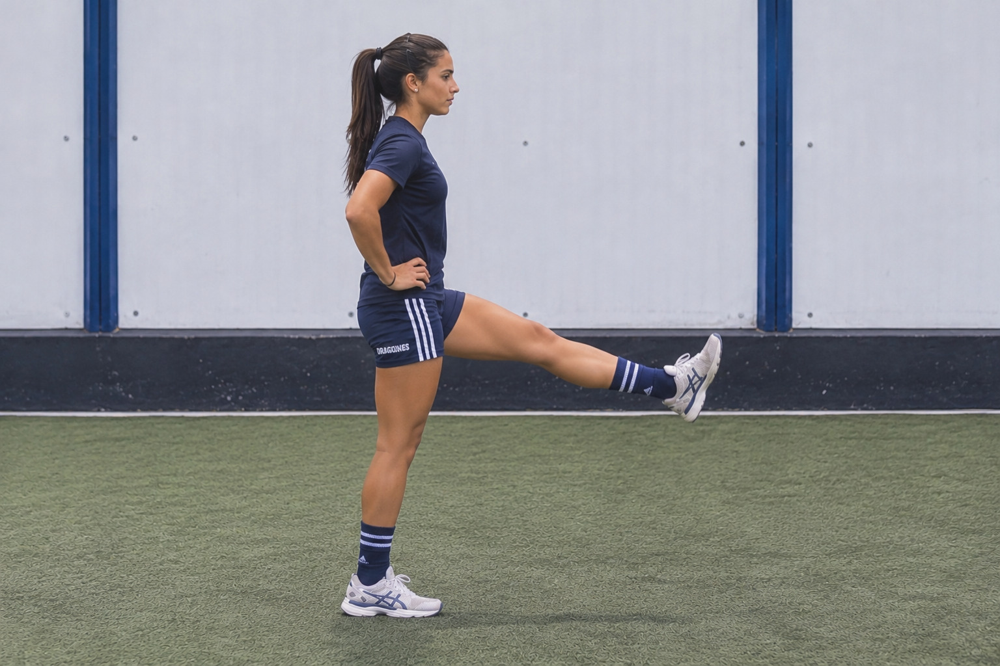

01. RODILLAS
Realizá flexiones suaves de rodillas, llevando la cadera ligeramente hacia atrás y manteniendo los pies apoyados. Evitá que las rodillas se desplacen hacia adentro.
10 repeticiones controladasPREPARACIÓN FÍSICA
Preparar tu cuerpo también es parte del entrenamiento. Antes de entrar a la cancha, es importante activar los músculos y movilizar las articulaciones para comenzar a moverte de manera progresiva.
CONOCÉ LOS EJERCICIOSEl hockey es un deporte que requiere velocidad, coordinación, cambios de dirección y movimientos constantes. Por eso, dedicar unos minutos a la movilidad y activación ayuda a preparar el cuerpo para las exigencias del juego.
01 / MOVILIDAD ARTICULAR
Antes de entrenar o competir, prepará las articulaciones y los principales grupos musculares que participan en los movimientos del hockey.
Realizá flexiones suaves de rodillas, llevando la cadera ligeramente hacia atrás y manteniendo los pies apoyados. Evitá que las rodillas se desplacen hacia adentro.
10 repeticiones controladas
Elevá los talones para quedar en puntas de pie y después bajá lentamente. Mantené el movimiento controlado y sin rebotes.
12 repeticiones
Caminá llevando los talones hacia los glúteos de manera alternada. Realizá el movimiento suavemente, sin forzar la rodilla.
10 pasos por pierna
Realizá balanceos de pierna hacia adelante y atrás, con el tronco erguido y un movimiento progresivo. No busques llegar al máximo recorrido.
10 balanceos por pierna
Apoyá un pie en el suelo y llevá la rodilla suavemente hacia adelante, sin levantar el talón. Alterná ambas piernas.
10 repeticiones por lado
Elevá una rodilla y realizá una apertura hacia afuera. Alterná las piernas para trabajar la movilidad de la articulación.
8 repeticiones por lado
Dibujá círculos amplios con los brazos, primero hacia adelante y después hacia atrás. Mantené los movimientos fluidos.
10 círculos por dirección
Con las piernas ligeramente flexionadas, realizá rotaciones suaves del tronco hacia ambos lados, sin movimientos bruscos.
10 repeticiones por lado02 / ACTIVACIÓN MUSCULAR
Después de movilizar las articulaciones, es momento de aumentar progresivamente la intensidad. Los ejercicios dinámicos ayudan a preparar el cuerpo para correr, cambiar de dirección y reaccionar durante el partido.
Comenzá con un desplazamiento tranquilo.
Alterná elevaciones de rodillas mientras avanzás.
Movete de lado a lado con control.
Alterná pasos amplios manteniendo el equilibrio.
03 / PREPARACIÓN PRECOMPETITIVA
Llegar preparada a la cancha requiere una activación progresiva. Esta secuencia reúne movimientos dinámicos para realizar antes de competir.
Comenzá con un trote cómodo para elevar progresivamente la intensidad.
Movilizá tobillos, rodillas, cadera y hombros.
Incorporá movimientos laterales y cambios de dirección controlados.
Realizá carreras cortas, aumentando gradualmente la velocidad.
Empezá con movimientos suaves y aumentá la intensidad de manera gradual.
Priorizá la calidad del movimiento antes que la velocidad.
No fuerces movimientos que provoquen dolor. Adaptá los ejercicios a tus necesidades.
Prepará tu cuerpo, activá tus movimientos y disfrutá cada momento en la cancha.
EXPLORAR OTRAS SECCIONES